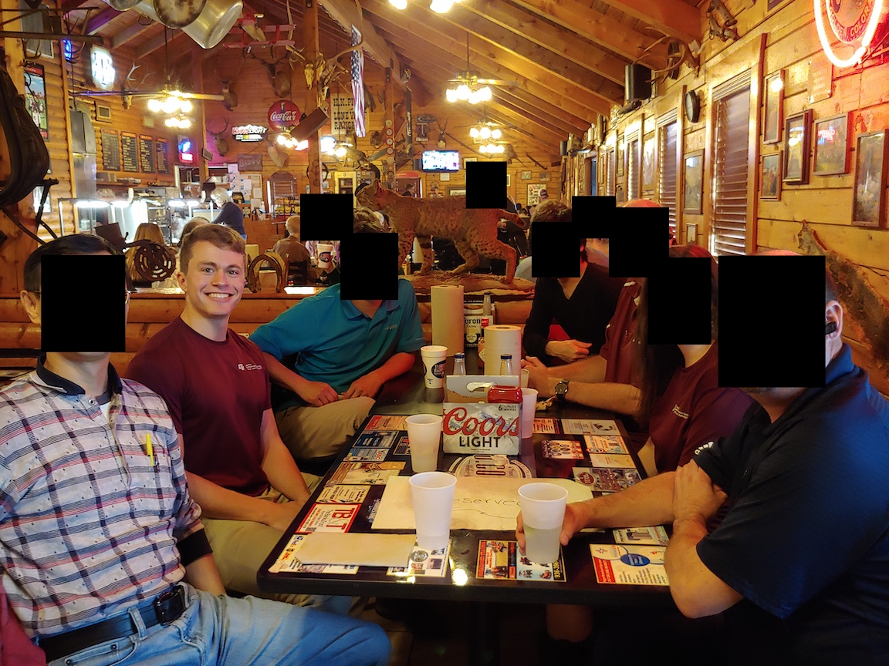
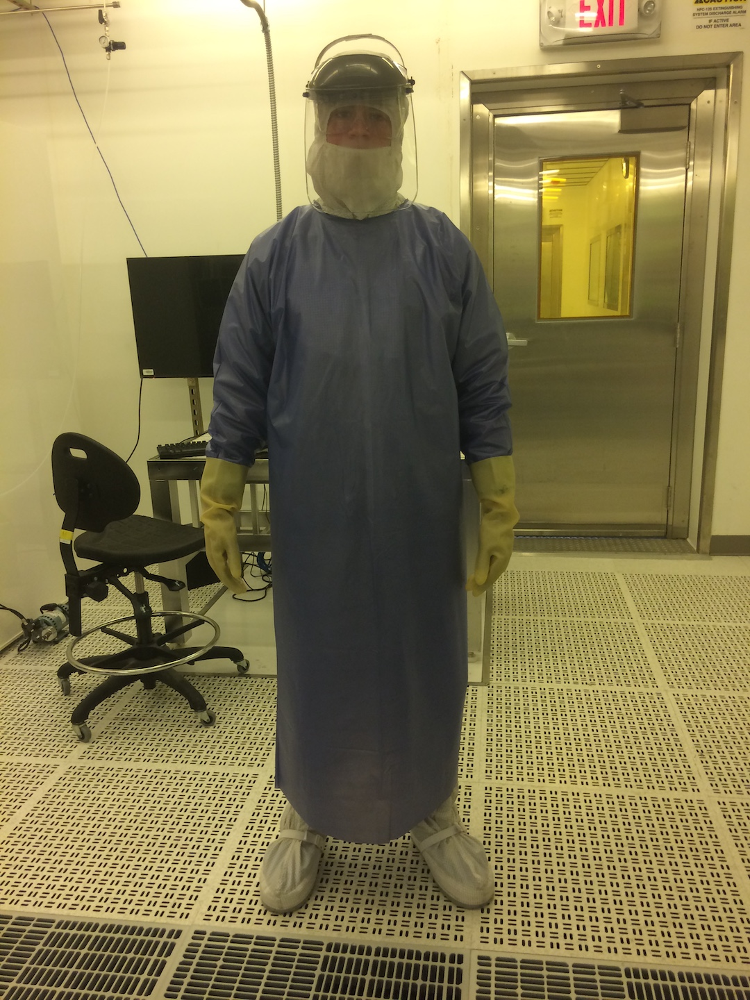
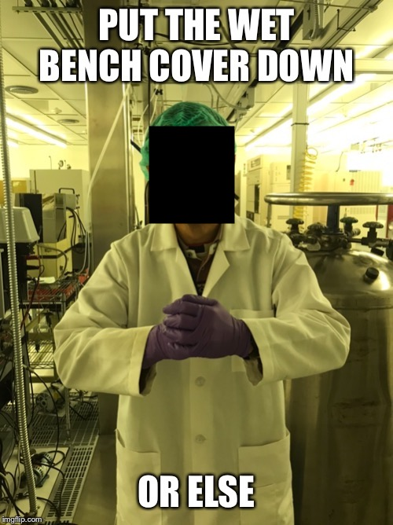
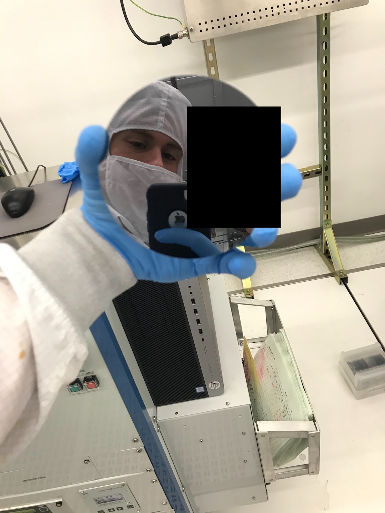

I believe this is and will be the best job I'll ever have. Others may come close, but the lack of stress, extreme amounts of fun, friendships made, and knowledge gained during my time at AggieFab are priceless.
First, a brief history and description of my role at AggieFab.
I began working there as a student technician in October 2017 and ended in May 2020 — 2.5 years total, excluding the summer of 2019, when I was interning at a company. I worked 20 hours per week every week, except for shorter weeks or holidays (where I worked anywhere between 20-39 hours).
AggieFab is a shared-user nanofabrication facility open to anyone who pays the membership and equipment fees. Texas A&M students, other university students, and private companies are welcome to join and use the facilities. The lab has tools that allow users to create devices on the micro- (one-millionth of one meter, or 10-6 m) and nano-scale (one billionth of one meter, or 10-9 m). Users vary heavily on discipline—while AggieFab is under the electrical engineering department's umbrella, students from materials science, chemistry, petroleum engineering, and even pharmaceuticals sciences use the facilities. The projects are equally as diverse: from microfluidics to GaN-based technologies to waveguides, there is a bit of everything as long as it is quite small and needs to be physically fabricated.
I had four primary responsibilities:
Whenever new or existing users needed training or assistance on tools, I helped them to learn the tool's operation and theory and answered any questions they had that was unique to their project. This requires an understanding of the entire process. For example, if a user was having trouble performing lithography, I would ask a few questions about their process, make any obvious improvements, then go and observe them in the lab.
All of the tools used are very technical. A majority have vacuum systems and almost all have electronics. Because of the constant usage—some of which is very stressful on the tool—preventative maintenance and repairs were done on a regular basis.
Occasionally new tools were acquired (hey, that's me!) by donation or purchase. I assisted in installation alongside other student workers, full-time staff, and factory engineers/technicians.
Documentation in the form of tool manuals, troubleshooting guides, and process guides were used to advance understanding for tool users and standardize maintenance and repair procedures.
Checking inventory and restocking, help moving large items, taking funny pictures, etc. It was a new experience every day.

Time and time again it is said that anybody who leaves America and experiences another culture for the first time is dramatically surprised and possibly even changed by that exposure. Outside of leaving America or traveling to an enclave of minorities (universities are close to this), the closest you can get to this experience is interacting with international students and learning about their culture.
Up to my start date in October 2017, I had very few meaningful interactions with any international students. I was acquaintances with a student from Saudi Arabia, but knew essentially zero people not from the U.S. I grew up in a predominantly white and Hispanic area and never sought out others of different ethnicities, as I didn't view it as important.
The lab, as it turned out, was predominantly international students and employees. Countries represented were (approximate number of people in parentheses): China (30), India (10), Korea (7), Taiwan (5), Iran (5), Turkey (3) Russia (1), Saudi Arabia (1), Bangladesh (1), Ukraine (1), Pakistan (1), Nigeria (1), Brazil (1), Spain (1), Qatar (1), Eritrea (1), Uzbekistan (1).
Interacting with these students had a significant impact on me. I learned about other countries' cultures directly from their citizens, not the mainstream media or stereotypes that often pervert our concepts of who these people are. Students gave me their perspectives on issues I had not considered. I got invited to a meals at restaurants I had never heard of and ate food I didn't know could taste so good. All of this wouldn't have been possible without AggieFab.
I came to learn that my primary motivator is progress. I'd go so far as to say I'm obsessed with progress. I see a few reasons for why it's so alluring:
Working at AggieFab was the most fun I had during my entire time at university (goes to show how cool I am, I know). So much fun that I often went to bed giddy with excitement for all the fun I was going to have at work the next day. I can count the number of times I didn't look forward to work on one hand—I never dreaded it, I just had other things going on that I would rather be doing.
I got to learn about and work on extremely high-tech tools, work with dangerous chemicals (see previous picture), hang out with good friends, makes memes, meet and talk to interesting people, wear a cleanroom suit (and sweat my butt off in it), and a host of other things that would take up a book to list.
A large part of why I enjoyed work so much was because of the people, particularly my coworkers. I got to hang out (I use that phrase purposefully—it never truly felt like "work") with them on a daily basis. We told jokes, traded "war stories" (as my manager called them), learned about each other and processes. I got to ask advice from three, 20+-year fab career workers: two with engineering and management experience and one with technician experience.
The biggest benefit I got out of AggieFab was purpose. I felt like I belonged amongst both the staff members and users. I contributed directly to the improvement of the facilities and it made a difference. I wasn't just another cog in the machine: my work mattered, and without me the productivity of the lab suffered. Users looked to me for guidance and help on a regular basis. They valued my opinion and often followed my suggestions, resulting in success they previously hadn't experienced. I made people's days brighter and jobs easier. The technician didn't have to hustle between tasks because I was there to take some of the burden off. The lab manager could trust me to make sure the small things were taken care of so he could focus on more important things.
I didn't have too many hobbies during my university years. I really enjoyed reading, exercising, and spending time with friends, but outside of that, nothing. I didn't start this website (which I consider my main hobby) until the third-to-last month of school, never had a girlfriend, didn't play video games or watch television shows, wasn't a part of any clubs. Work was my hobby. I don't think this is necessarily a bad thing. If work is truly that enjoyable, why shouldn't it double as a hobby?
As I write this now (01 December 2020), I find my current work much less enjoyable, but am not sure the distribution of reasons (is it 70% this, 30% that, etc). Having hobbies definitely plays a role, though. I am more anxious to get home to my hobbies and find myself thinking about them during the day, something I rarely did at AggieFab (but due to lack of options).
My lessons learned will be applied to future jobs in hopes of making them as enjoyable as possible.
Thank you to the following people for helping to make AggieFab such an awesome experience: LR, DM, MWL, JHW, MR, AB, MT, JG, WB, MB, AY, AD, ZY, AU, YB, MRS, AB, MM, ES, AJ, HTC, TJ, BA, ZC, AG, AB, GS, MA, ZM, AA, SBK, HC, DY, RS, NA, RU, ZL, MK.